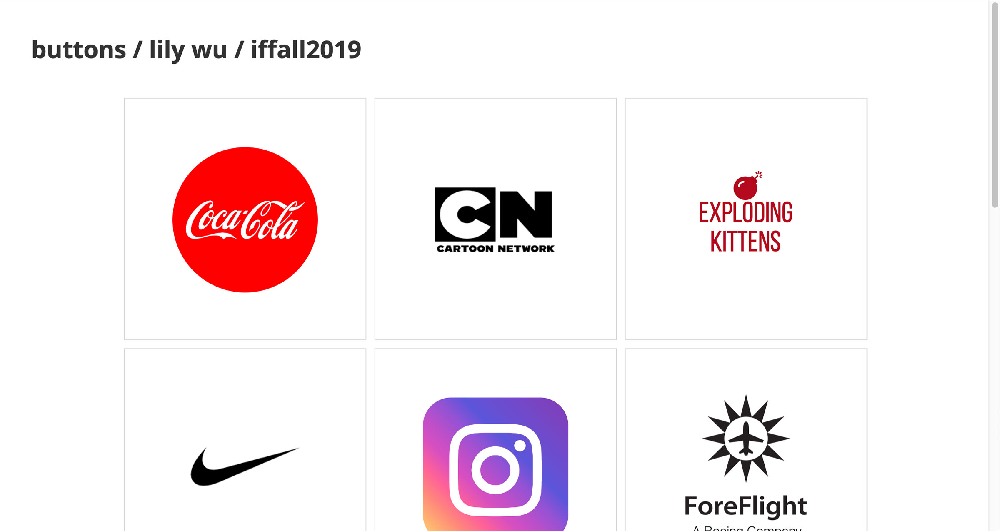
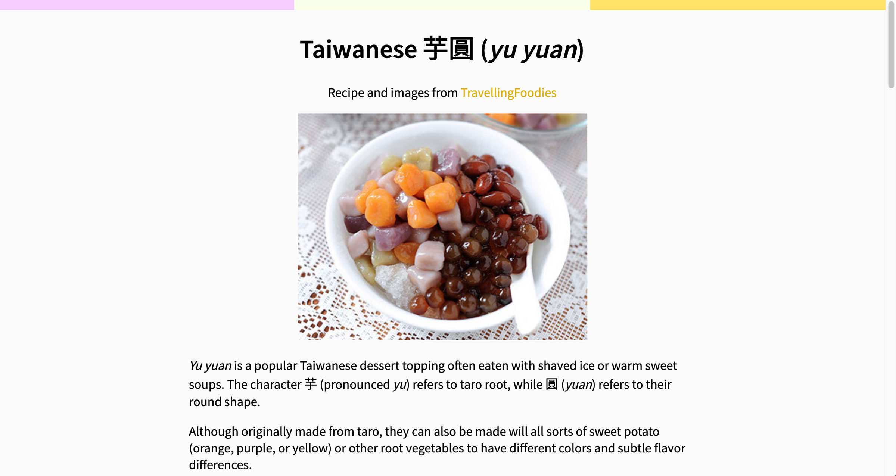
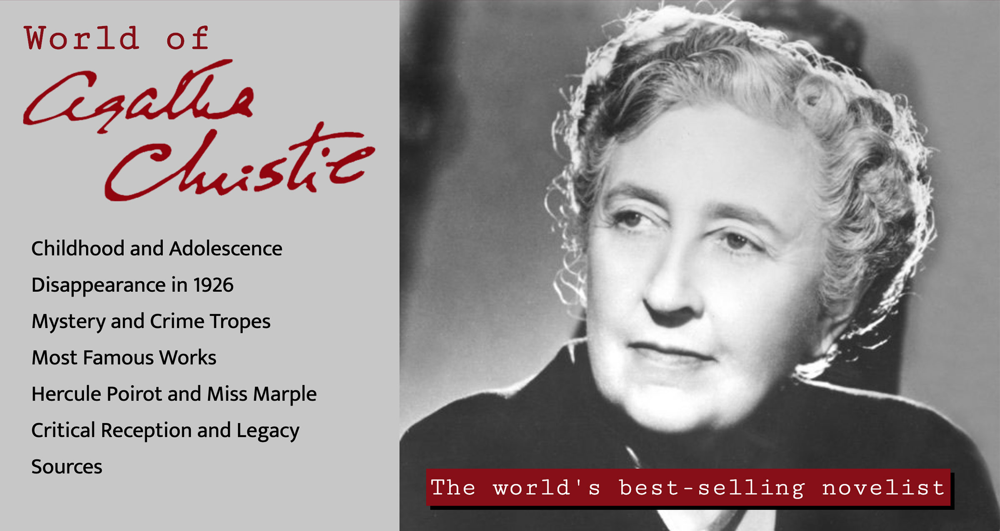

|  |
Button CreationA collection of buttons for various brands, combining concept design with CSS. Each transition was created with the brand/company in mind. |
|  |
Recipe PageA recipe page with style and format optimized for mobile devices, using a recipe for a lesser-known Taiwanese dessert and a color palette derived from the dish itself. |
 |
Postcard TriptychA triptych of responsive digital postcards with quotes from Tove Jansson's Moomin works, always provide comfort through whimsical yet philosophical stories. |
|  |
MicrositeA themed website designed in partnership with a creative director (classmate) over several weeks in order to coordinate and polish the layout, colors, style, etc. |